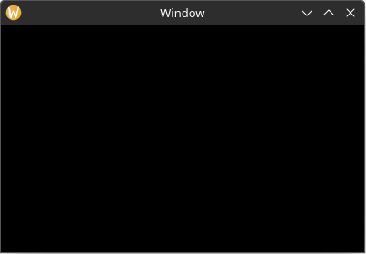
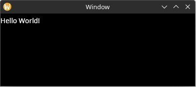
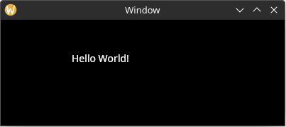
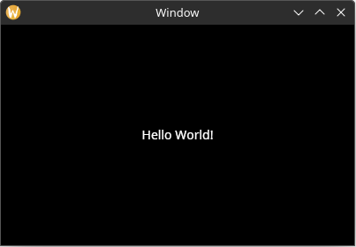
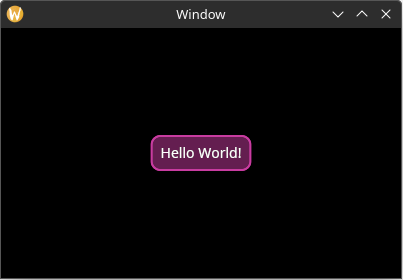

Foreword
This book is currently a WIP
Welcome to the official book for the Yarrow GUI framework!
Yarrow is a modern retained-mode GUI library in Rust with extreme performance and control, geared towards audio software. It was built to power the upcoming Meadowlark DAW.
The repository for the project is located at https://github.com/MeadowlarkDAW/Yarrow.
Getting Started
Installing Rust
The Yarrow framework is built using the Rust programming language. Currently, to use Yarrow, you must install the Rust compiler by following the instructions over at https://www.rust-lang.org/learn/get-started.
Running the Examples
The Yarrow repository on github contains some example applications. To run these examples, first clone the repository to a local directory. Then inside a terminal, navigate to the root directory and run the following command:
cargo run --example <name_of_example>
Where <name_of_example> should be replaced with the example name (i.e. cargo run --example gallery)
Join the Community
If you have any questions about Yarrow or you wish to contribute, come join us on the Meadowlark Discord Server under the #yarrow channel.
Quick Start Guide
This guide is currently a WIP
This chapter will walk you through the basics of Yarrow by creating a simple application.
This book is not meant as an introduction to the Rust programming language. If you are new to Rust, it is highly recommended to first read through the official Rust book. You can find even more Rust learning resources at https://www.rust-lang.org/learn.
Setting Up
First, create a new Rust project with the following command:
cargo new --bin hello_yarrow
Adding Yarrow as a dependency
In the newly created directory, open the Cargo.toml file and add the following under [dependencies]:
[package]
name = "hello_yarrow"
version = "0.1.0"
edition = "2021"
[dependencies]
yarrow = { git = "https://github.com/MeadowlarkDAW/Yarrow.git", branch = "main" }
Yarrow does not have a recent version published on crates.io yet, so you will need to use the git version for now.
Enabling Additional Optimizations
Some aspects of Yarrow such as text shaping can run very slow when compiled in debug mode without any optimizations. It is recommended to add the follow to your Cargo.toml file to get acceptable performance when running in debug mode:
[profile.dev]
opt-level = 1
Initializing the Application
In main.rs, replace the default contents with the following:
use yarrow::prelude::*; // 1 pub fn main() { let (action_sender, action_receiver) = yarrow::action_channel(); // 2 yarrow::run_blocking( // 3 MyApp::new(action_sender.clone(), action_receiver), action_sender, ) .unwrap(); } struct MyApp { // 4 _action_sender: ActionSender<()>, _action_receiver: ActionReceiver<()>, } impl MyApp { fn new( action_sender: ActionSender<()>, action_receiver: ActionReceiver<()> ) -> Self { Self { _action_sender: action_sender, _action_receiver: action_receiver, } } } impl Application for MyApp { // 5 type Action = (); // 6 }
Here is a breakdown of what is happening:
- Import a bunch of types from Yarrow. Yarrow provides a
preludemodule that re-exports most of everything you need for simplicity. - Create an action channel. We will cover what actions are and how they work later in this chapter. For now just know this is essentially an mpsc channel from Rust's standard library.
- Run our application. For standalone applications you will want to use
run_blocking, but Yarrow contains other methods for running in different kinds of contexts (like an audio plugin). - Our application struct. This is where we will store everything related to our application. Note that we are holding onto the action channel objects, as we will use them later. (Your application struct must hold on to at least the
ActionReceiverobject or it might panic). - The
yarrow::Applicationtrait. We must implement this for our application object. - Define the type to use as our applications's action message. For now we have no actions, so we will set it to the empty type
().
Running the Application
Now run the application using the command cargo run. Once it finishes compiling you should see an empty black window.

The first compile may take quite a while as it is compiling an entire GUI library from scratch. Subsequent compiles should be much faster.
Yarrow is still experimental software. If you run into any issues while compiling or running this code, please create an issue in the github repository.
Your First Element
Let's start by adding a Label element with the text "Hello World!".
A Place to Store our Elements
First we will need to create a struct to hold our elements for the main window. Add the following struct:
#![allow(unused)] fn main() { pub struct MainWindowElements { hello_label: Label, } }
Why can't we just add hello_label directly to our MyApp struct? The reason is that a Yarrow application is designed to work even when the main window isn't open. This is a useful concept for audio plugins. Plus, this allows the same behavior to work for both the main window and any child windows in our application (Yarrow has first-class multi-window support!)
Now add the following field to the MyApp struct:
#![allow(unused)] fn main() { struct MyApp { main_window_elements: Option<MainWindowElements>, // new _action_sender: ActionSender<()>, _action_receiver: ActionReceiver<()>, } }
And in MyApp::new():
#![allow(unused)] fn main() { fn new( action_sender: ActionSender<()>, action_receiver: ActionReceiver<()> ) -> Self { Self { main_window_elements: None, // new _action_sender: action_sender, _action_receiver: action_receiver, } } }
The Build Function
Now we must define a function to "build" our elements when the window opens. To do this, add the following method to MainWindowElements:
#![allow(unused)] fn main() { impl MainWindowElements { pub fn build(cx: &mut WindowContext<'_, ()>) -> Self { } } }
Now we must call that build function when the main window opens. To do this, implement the on_window_event method on the Application trait:
#![allow(unused)] fn main() { impl Application for MyApp { type Action = (); // new fn on_window_event( &mut self, event: AppWindowEvent, window_id: WindowID, cx: &mut AppContext<()>, ) { match event { AppWindowEvent::WindowOpened => { if window_id == MAIN_WINDOW { // 1 let mut main_window_cx = cx.window_context(MAIN_WINDOW).unwrap(); // 2 self.main_window_elements = Some(MainWindowElements::build(&mut main_window_cx)); // 3 } } _ => {} } } } }
- Check the ID of the window to see if it is the main window. This will always be the case for our simple app, but this won't be the case if we add child windows in the future.
- Get the context for the main window. This context is what we add elements to.
- Build the main window elements and store it in our application struct.
Building the Label Element
Now we finally get to build the label! Inside MainWindowElements::build, add the following:
#![allow(unused)] fn main() { pub fn build(cx: &mut WindowContext<'_, ()>) -> Self { // new Self { hello_label: Label::builder() // 1 .text("Hello World!") // 2 .build(cx), // 3 } } }
- All included elements in Yarrow use the builder pattern.
- Elements can include any custom property in their builders. In this case we use the
textproperty to set the text of the label. - Finally, finish building the element by adding it to the window context.
Static Layout
If you run the application now, you will see that the window is still blank. This is because in order for elements to become active and be rendered, they must have a defined "bounding rectangle".
You can add a bounding rectangle by using the bounding_rect property on the label builder like this. Now the label is visible when the app is run.
#![allow(unused)] fn main() { hello_label: Label::builder() .text("Hello World!") .bounding_rect(rect(0.0, 0.0, 100.0, 30.0)) // new .build(cx), }

If we want to place the label in a different position, all we need to do is change the (x, y) values in the bounding rect:
#![allow(unused)] fn main() { .bounding_rect(rect(100.0, 40.0, 100.0, 30.0)) }

Also note that if we make the (width, height) values in the bounding rect small enough, the text will be clipped:
#![allow(unused)] fn main() { .bounding_rect(rect(100.0, 40.0, 30.0, 10.0)) }
[TODO: screenshot, and actually make the text clip because I must have broke that lol]
Dynamic Layout
Setting the bounding rectangle inside of the element builder works great and all for static content, but what if we wanted the layout to dynamically change due to a change in the application state (or the window being resized)? And for that matter, what if we wanted to layout other elements based on the size of the text in the label element?
To achieve this, we will define a "layout function" for our main window. Remove the .bounding_rect property from the Label builder and then add the following method to MainWindowElements:
#![allow(unused)] fn main() { impl MainWindowElements { // ... // new pub fn layout(&mut self, cx: &mut WindowContext<'_, ()>) { let label_size = self.hello_label.desired_size(cx.res); // 1 // Center the label inside the window let window_rect = Rect::from_size(cx.logical_size()); // 2 let label_rect = centered_rect(window_rect.center(), label_size); // 3 self.hello_label.el.set_rect(label_rect); // 4 } } }
- The
desired_sizemethod can be used to get the desired size of any element with text content (or some other dynamically sized content). This value is automatically cached by the element, so it is relatively inexpensive to call it over and over again if need be. - Get the size of the window from the window context. Also convert that size into a rectangle for ease of use later (Yarrow uses euclid for geometric types).
- Create a rectangle that is centered inside of
window_rectusing the provided helper method. - Set the bounding rectangle via the label element's handle. Note the
.elin the middle. Every element handle has a genericelfield with generic methods that are shared by all element types. For example, the genericelfield also has arect()method that can retrieve the current bounding rectangle of the element, which is very useful when the layout of some elements depend on the layout of other elements.
Note that the same effect can be achieved by using the
layout_alignedmethod on theLabelhandle:#![allow(unused)] fn main() { let window_rect = Rect::from_size(cx.logical_size()); self.hello_label.layout_aligned(window_rect.center(), Align2::CENTER, cx.res); }
No we must call the layout function after the main window is built and whenever the window resizes. To do this, add the following to the on_window_event trait method:
#![allow(unused)] fn main() { fn on_window_event( &mut self, event: AppWindowEvent, window_id: WindowID, cx: &mut AppContext<Self::Action>, ) { match event { AppWindowEvent::WindowOpened => { if window_id == MAIN_WINDOW { let mut main_window_cx = cx.window_context(MAIN_WINDOW).unwrap(); self.main_window_elements = Some(MainWindowElements::build(&mut main_window_cx)); // new self.main_window_elements .as_mut() .unwrap() .layout(&mut main_window_cx); } } // new AppWindowEvent::WindowResized => { if window_id == MAIN_WINDOW { let mut main_window_cx = cx.window_context(MAIN_WINDOW).unwrap(); self.main_window_elements .as_mut() .unwrap() .layout(&mut main_window_cx); } } _ => {} } } }
Now the label stays in the center of the window!

Adding Style
Now let's make the label more visually interesting.
To be more representative of a real-world application, let us define a struct to hold all of the style related information about our application:
#![allow(unused)] fn main() { #[derive(Default)] struct MyStyle {} }
This struct has no fields yet, but we will add some later.
For now, let us define a method which loads the styles for the elements we want:
#![allow(unused)] fn main() { impl MyStyle { pub fn load(&self, res: &mut ResourceCtx) { // 1 res.style_system.add( // 2 "", // 3 true, // 4 LabelStyle { // 5 back_quad: QuadStyle { bg: Background::Solid(RGBA8::new(100, 30, 80, 255)), border: BorderStyle { color: RGBA8::new(200, 60, 160, 255), width: 2.0, radius: 10.0.into(), }, ..Default::default() }, text_padding: Padding::new(10.0, 10.0, 10.0, 10.0), ..Default::default() // 6 }, ); } } }
- Pass in the
ResourceCtx, which is a context for the globally shared resources in a Yarrow application. - Add a style to the context's
StyleSystem. - The "class name". Only elements that have this class name will have this style applied to them. The blank name of
""means to set it as the default style for all elements of this type which don't have a defined class name. - Whether or not this style is a dark theme variant (true) or a light theme variant (false). This allows for easy switching between light and dark variants later.
- Every element type defines its own custom style struct with custom properties.
- The
..Default::default()syntax is handy for not defining properties you do not use.
Now store our new style struct in MyApp and load it when the application starts:
#![allow(unused)] fn main() { struct MyApp { // ... // new style: MyStyle, } impl MyApp { fn new(action_sender: ActionSender<()>, action_receiver: ActionReceiver<()>) -> Self { Self { // ... // new style: MyStyle::default(), } } } impl Application for MyApp { type Action = (); fn on_window_event( &mut self, event: AppWindowEvent, window_id: WindowID, cx: &mut AppContext<Self::Action>, ) { match event { AppWindowEvent::WindowOpened => { if window_id == MAIN_WINDOW { // new self.style.load(&mut cx.res); let mut main_window_cx = cx.window_context(MAIN_WINDOW).unwrap(); // ... } } // ... } } } }
Now our label is looking fancy!

Loading a Theme
By default all elements have a style which is very bare-bones (and most of the time colors are set to transparent). If you want a quicker starting place, you can load one of Yarrow's built in themes. A "theme" is simply a function with a few tweakable parameters that adds a bunch of styles.
At the time of this writing, Yarrow has only one built-in theme called "Yarrow dark". To use it, simply add this inside of MyStyle::load():
#![allow(unused)] fn main() { yarrow::theme::yarrow_dark::load(None, None, res); }
After loading a theme, it's probably a good idea to use a class for our custom fancy label so it doesn't conflict with the default one in the theme:
#![allow(unused)] fn main() { // In MyStyle::load res.style_system.add( "fancy_label", // changed // ... ); // In MainWindowElements::build hello_label: Label::builder() .text("Hello World!") .class("fancy_label") // new .build(cx), }
Responding to Actions
[TODO]